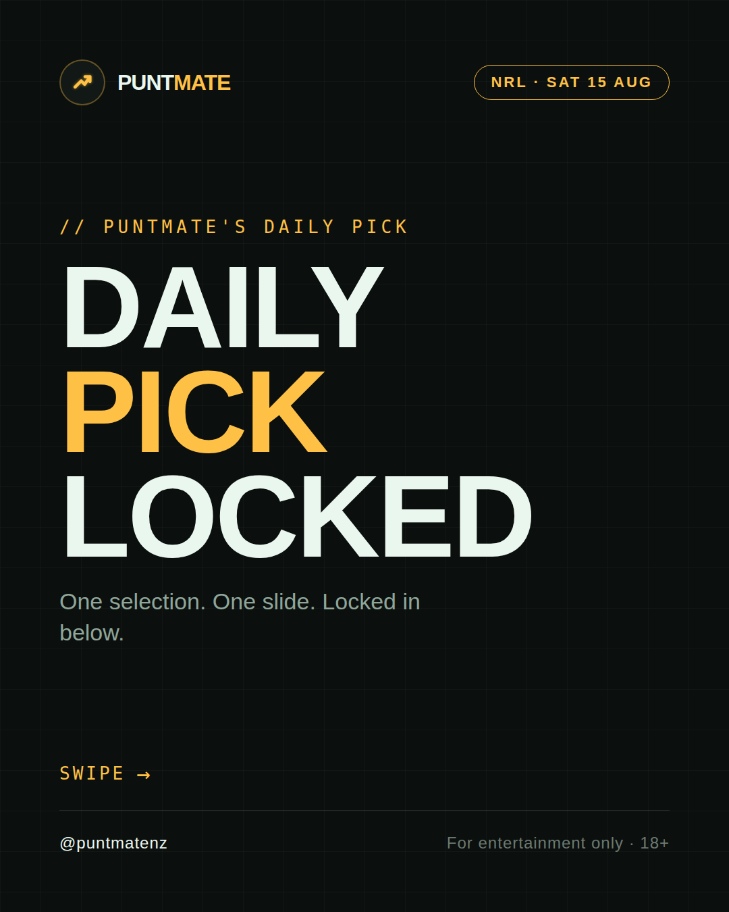
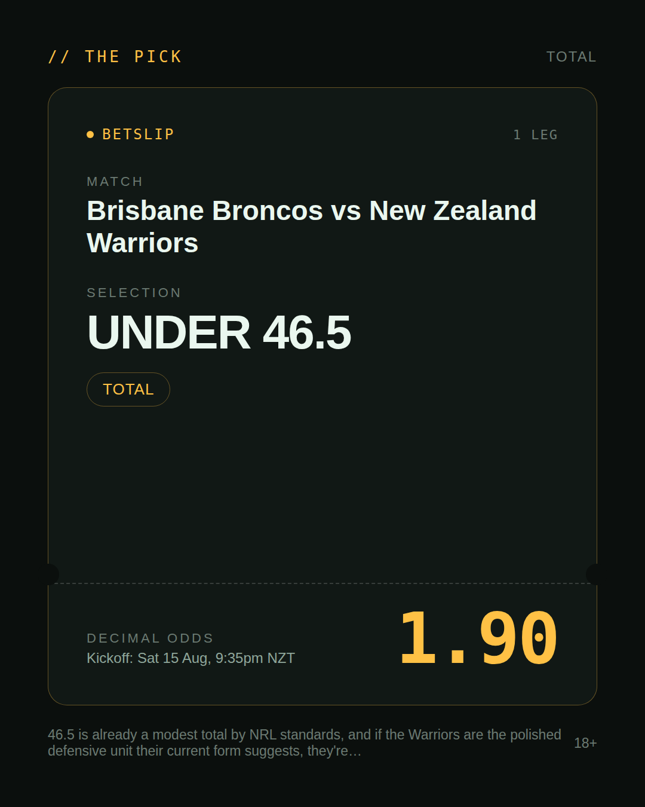
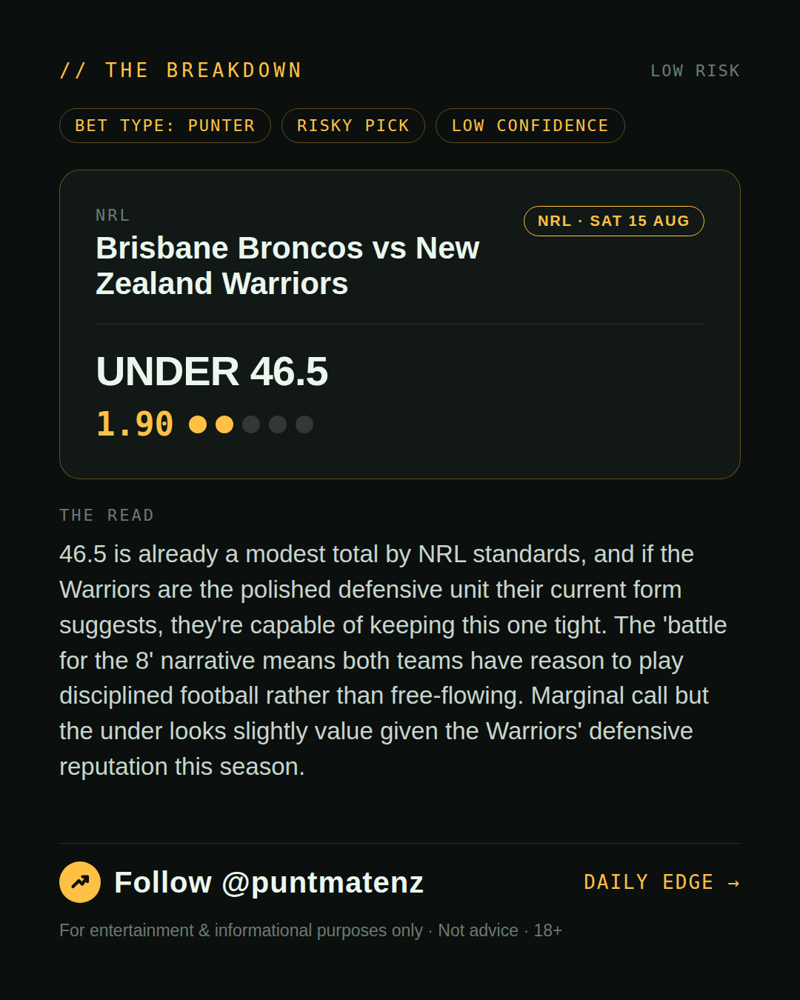
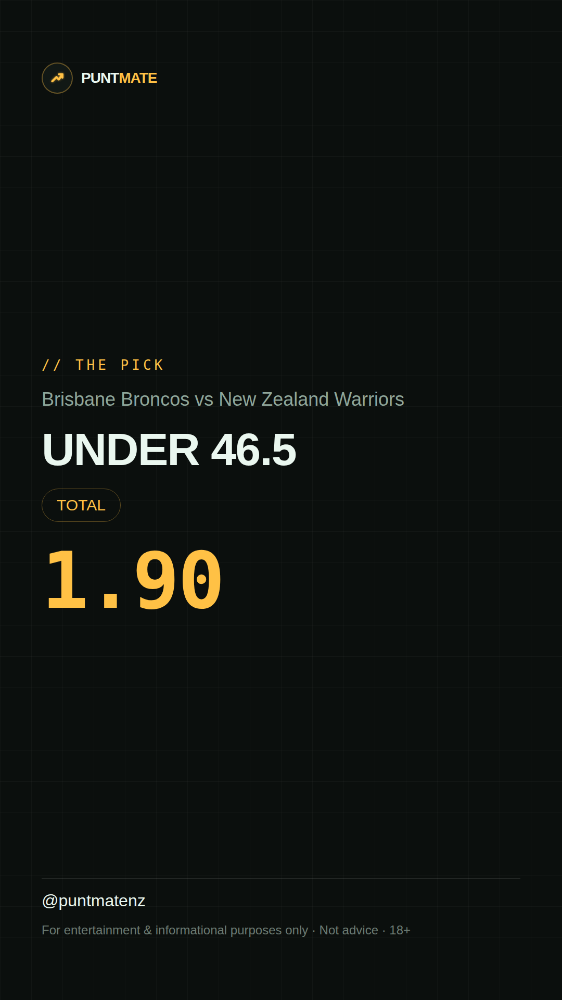

*🎯 PUNTMATE NZ — NRL* 🏟 Brisbane Broncos vs New Zealand Warriors *PICK:* UNDER 46.5 *ODDS:* 1.90 (Total) *BET TYPE: PUNTER* _46.5 is already a modest total by NRL standards, and if the Warriors are the polished defensive unit their current form suggests, they're capable of keeping this one tight. The 'battle for the 8' narrative means both teams have reason to play disciplined football rather than free-flowing. Marginal call but the under looks slightly value given the Warriors' defensive reputation this season._ ────────────────── 📲 Join Telegram for daily picks ⚠️ For entertainment & informational purposes only. Not advice. 18+.
🎯 NRL — Brisbane Broncos vs New Zealand Warriors UNDER 46.5 @ 1.90 (Total) BET TYPE: PUNTER Solid touch here. Not a lock, but the value's real and the form backs it up. 46.5 is already a modest total by NRL standards, and if the Warriors are the polished defensive unit their current form suggests, they're capable of keeping this one tight. The 'battle for the 8' narrative means both teams have reason to play disciplined football rather than free-flowing. Marginal call but the under looks slightly value given the Warriors' defensive reputation this season. Follow for daily value picks → @puntmatenz ⚠️ For entertainment & informational purposes only. Not advice. 18+. #PuntmateNZ #SportsBetting #NZTAB #NRL
| has_pick | True |
| pick_id | 2026-08-14_Brisbane_Broncos_vs_New_Zealand_Warriors |
| run_id | 32408894773 |
| generated_at | 2026-08-20T19:29:49.940585+00:00 |
| post_date | 2026-08-14 |
| match | Brisbane Broncos vs New Zealand Warriors |
| sport | rugbyleague_nrl |
| sport_label | NRL |
| market | Total |
| selection | UNDER 46.5 |
| odds | 1.90 |
| bet_type | PUNTER_BET |
| bet_type_label | BET TYPE: PUNTER |
| bet_type_reason | Solid touch here. Not a lock, but the value's real and the form backs it up. 46.5 is already a modest total by NRL standards, and if the Warriors are the polished defensive unit their current form suggests, they're capable of keeping this one tight. The 'battle for the 8' narrative means both teams have reason to play disciplined football rather than free-flowing. Marginal call but the under looks slightly value given the Warriors' defensive reputation this season. |
| classification | RISKY_PICK |
| risk | RISKY_PICK |
| confidence | LOW |
| confidence_label | LOW |
| final_explanation | 46.5 is already a modest total by NRL standards, and if the Warriors are the polished defensive unit their current form suggests, they're capable of keeping this one tight. The 'battle for the 8' narrative means both teams have reason to play disciplined football rather than free-flowing. Marginal call but the under looks slightly value given the Warriors' defensive reputation this season. |
| public_caution | Keep this one light — the value's there but so is the uncertainty. |
| theme | night |
| carousel_paths | ['data/review/2026-08-14_Brisbane_Broncos_vs_New_Zealand_Warriors/cover.png', 'data/review/2026-08-14_Brisbane_Broncos_vs_New_Zealand_Warriors/tip.png', 'data/review/2026-08-14_Brisbane_Broncos_vs_New_Zealand_Warriors/breakdown.png'] |
| carousel_urls | ['https://raw.githubusercontent.com/kingofthecastle24/puntmate/main/data/cards/2026-08-14_Brisbane_Broncos_vs_New_Zealand_Warriors_night_1_cover.png', 'https://raw.githubusercontent.com/kingofthecastle24/puntmate/main/data/cards/2026-08-14_Brisbane_Broncos_vs_New_Zealand_Warriors_night_2_tip.png', 'https://raw.githubusercontent.com/kingofthecastle24/puntmate/main/data/cards/2026-08-14_Brisbane_Broncos_vs_New_Zealand_Warriors_night_3_breakdown.png'] |
| story_path | data/review/2026-08-14_Brisbane_Broncos_vs_New_Zealand_Warriors/story.png |
| story_url | https://raw.githubusercontent.com/kingofthecastle24/puntmate/main/data/cards/2026-08-14_Brisbane_Broncos_vs_New_Zealand_Warriors_night_story.png |
| intended_platforms | ['telegram', 'instagram_feed', 'instagram_story', 'facebook'] |
| workflow_state | GENERATED |
| has_punter_multi | False |
| has_gambler_multi | False |
| has_degenerate_multi | False |